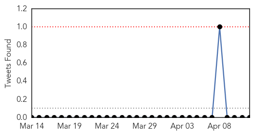

30 Day Trends
Web: 2 alerts, 0 warnings
Twitter: 0 alerts, 0 warnings
Top Articles:
- 0.999
- Human Infection With MERS Coronavirus Reported In Jordan
- 0.999
- UAE: Filipino paramedic dies from MERS, others infected
- 0.999
- UAE: paramedic dies from MERS, others infected
- 0.996
- Mers no cause for concern in UAE, says expert
- 0.995
- 'Abu Dhabi schools free of Mers virus' - Emirates 24
- 0.991
- Special quarantine units for MERS patients urgedHealthcare
- 0.966
- Schools allay MERS fears
- 0.864
- Farsnews
- 0.801
- Envoy urges Filipino medics to take precautions
Top Tweets:
- 0.658
- RT: Saudi Arabia - 22 MoH confirmed coronavirus cases in Jeddah cluster http://t.co/kUwW8BTo9E MERS
Web/News Articles

Tweets
Article Locations